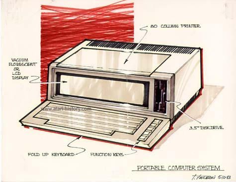

All in one portable computer in 1983 with flourescent of LCD display, a
fold-up keyboard, built in 3.5" disk drive and an 80 column printer.
Quite an impressive concept for the traveling user who would have it all
in one convenient carry-around package. Sort of looks
like a cross between the Compaq Portable and some of today's all-in-one
wordprocessors.